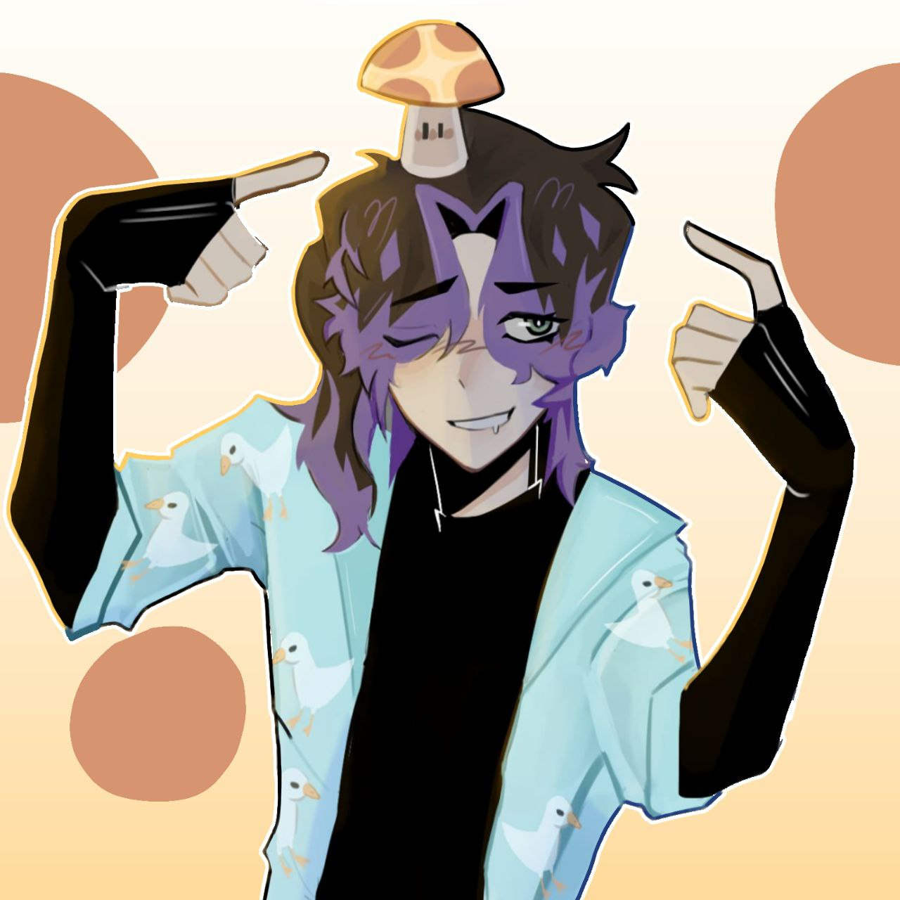

Kraystall
Здарова, я — Крайсталл, владелец Sherwo. Снизу общая информация о сервере и мои личные соцсети, конечно. Буду ждать тебя на Шерво!
Что такое Шерво?
Шерво — это майнкрафт сервер, где найдется место каждому. В основном мы строим и проводим ивенты, но наши игроки занимаются множеством различных активностей: пвп, рп, редстоун-инженерингом, лором и еще кучей всего! Наша история длится уже более двух лет, мы ценим каждого, кто создает ее с нами ;)
Как попасть на Шерво?
Зайти на Шерво можно только с версии 1.21.11, vanilla, forge или fabric - без разницы. Айпи: Sherwo.bisquit.host
Организатор рекламной кампании
Самозанятый Осенков Денис Алексеевич, ИНН 595706543633 (НЕ ЯВЛЯЕТСЯ ВЛАДЕЛЬЦЕМ СЕРВЕРА SHERWO)